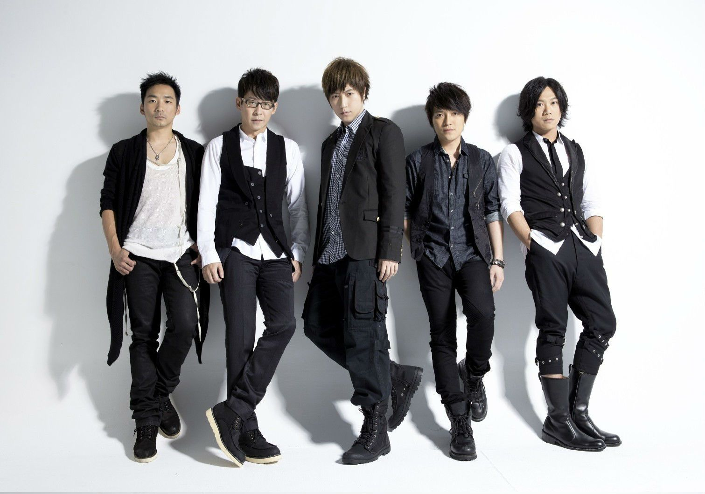

<!DOCTYPE html>
<html lang="en">
<head>
    <meta charset="UTF-8">
    <title>Title</title>
</head>
<body>

</body>
</html>

<h1><a href="#fff"></a>五月天</h1>

<p>&nbsp;&nbsp;&nbsp;&nbsp;五月天，中国台湾摇滚乐团，由温尚翊（怪兽）、陈信宏（阿信）、石锦航（石头）、蔡升晏（玛莎）、刘谚明（冠佑）组成。</p>
<p> &nbsp;&nbsp;&nbsp;&nbsp; 乐团前身为“So Band”乐团，在1997年3月29日更名为“五月天”。乐团至2016年，四次拿下"台湾金曲奖"和“最佳乐团奖”。</p>
<p><a href="#ddd"></a> &nbsp;&nbsp;&nbsp;&nbsp; 1999年，发行首张专辑《第一张创作专辑》。 [2]  2000年7月7日，发行了第二张创作专辑《爱情万岁》。2001年7月6日，推出暂别歌坛之作第三张创作专辑《人生海海》。2003年11月11日，发行第四张专辑《时光机》。2004年11月5日，推出第五张专辑《神的孩子都在跳舞》。2005年8月，推出精选辑《知足Just My Pride最真杰作选》。2006年12月29日，发行第六张专辑《为爱而生》。2008年10月23日，发行第七张专辑《后青春期的诗》。2011年12月16日，发行第八张专辑《第二人生》。2016年7月21日，发行第九张专辑《自传》。 [3] </p>



<h2 id="#uuu">早年经历</h2>


<p>&nbsp;&nbsp;&nbsp;&nbsp;1992年至1994年，阿信、怪兽、玛莎、石头先后结识于台湾师范大学附属中学，加入师大附中的吉他社，开启了音乐旅程。</p>
<p>&nbsp;&nbsp;&nbsp;&nbsp;1995年，还在读高中的吉他手怪兽、主唱阿信，以及第一任的鼓手钱佑达组成名为“So Band”的乐团，之后贝斯手玛莎加入。四人自高中毕业后，分别进入不同的大学就读，但乐团并未停止活动，持续在许多酒吧、餐厅驻唱表演。</p>
<p>&nbsp;&nbsp;&nbsp;&nbsp;1997年，野台开唱活动前，加入了吉他手石头，为了报名参加野台开唱，五人使用玛莎在网络BBS的代号“MAYDAY”作为团名，正式更名为“五月天”。3月29日五月天野台开唱，正式组成乐队。 [4] </p>
<p id="ggg">&nbsp;&nbsp;&nbsp;&nbsp;1998年1月，发行第一张乐团合辑《ㄞ国歌曲》</p>
<p>&nbsp;&nbsp;&nbsp;&nbsp;1998年6月，发行华语第二张同志专辑《拥抱》。</p>
<p>&nbsp;&nbsp;&nbsp;&nbsp;1999年，第四任鼓手冠佑加入乐团，主唱阿信把成军时间改为冠佑加入后。</p>


<h2><a href="#bbb">演艺经历</a></h2>


<p id="ccc">&nbsp;&nbsp;&nbsp;&nbsp;1998年6月，五月天加入滚石唱片，正式成为滚石唱片的一员。</p>
<p>&nbsp;&nbsp;&nbsp;&nbsp;1999年7月7日，发行加入滚石之后的第一张专辑《第一张创作专辑》。</p>
<p>&nbsp;&nbsp;&nbsp;&nbsp;2000年7月7日，发行了第二张创作专辑《爱情万岁》。</p>
<p>&nbsp;&nbsp;&nbsp;&nbsp;2001年5月16日，发行音乐作品《候鸟》电影原声带，并且于日本发行日版精选集《Call Me NO.1》；7月6日，发行第3张创作专辑《人生海海》，并推出暂别歌坛之作《人生海海》；10月，怪兽、玛莎和阿信准备入伍，于是在入伍之前发行了专辑《五月天素人自拍》；12月，发行五月天《你要去哪里·台湾巡回演唱会LIVE全记录》。 [5] </p>
<p>&nbsp;&nbsp;&nbsp;&nbsp;2002年9月，怪兽、阿信制作的《半成年主张》专辑发行，怪兽、阿信与歌手孙燕姿共组团体Kid&Dream并合作《王子面》；12月12日，创作EP《摇滚本事》发行；12月20日，五月天记录电影《摇滚本事》上映。</p>


  <p>wangwangwang <sup> <a href="#top">[0]</a></sup></p>
    <p>shabi <sup id="bbb">[1]</sup></p>
